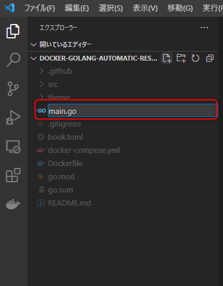
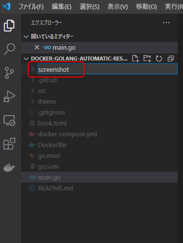

1. はじめに
1.1. 今回行うこと
Docker、go、agoutiを使用し、ANAの飛行機を予約する。
※実際には予約完了までは行わず手前で完了とします
2. Dockerの準備
2.1. プログラムをダウンロード
こちらからdocker-golang-automatic-reservation-mainをZIPでダウンロードします。
下図のボタンからダウンロード可能です。

※後述の動作確認の時に影響があるため、管理者権限が必要なディレクトリには解凍しないようにしましょう。（下図はWindowsの場合の解凍先例）

- Windowsの方
C:\meetupにダウンロードしたZIPファイルを解凍しています。
- Macの方
/Users/{your name}/meetupにダウンロードしたZIPファイルを解凍しています。
2.2. Dockerイメージのビルド
コマンドプロンプトで解凍したdocker-golang-automatic-reservation-mainまで移動します。
# Windowsの場合
cd C:\meetup\docker-golang-automatic-reservation-main
# Macの場合
cd ~/meetup/docker-golang-automatic-reservation-main/
移動したら以下を実行します。
docker-compose build
# 完了するまでそこそこ時間がかかります…
2.3. コンテナの起動
前項が完了したら、ディレクトリはそのままで以下コマンドを実行します。
docker-compose up -d
更に以下のコマンドを実行しコンテナが正常に起動しているか確認します。
docker ps
# Creating docker-golang-automatic-reservation-main_app_1 ... done
# ↑のように「docker-golang-automatic-reservation-main_app_1」のコンテナがupしていればOK！
3. Goのプログラム作成
3.1. main.goファイルの作成
まずは Go が正しく実行できていることを確認するためにメッセージを出力するところまで確認します。

docker-golang-automatic-reservation-main配下にあるmain.goファイルを編集します。
下図のとおり、VS Codeなどのエディタで開いてHello Worldを出力させるよう編集します。

以下の内容を追加して保存します。
package main
import "fmt"
func main() {
fmt.Printf("Hello World\n")
}
3.2. コンテナに接続し、Goを実行
# コンテナの中に入る
docker exec -it docker-golang-automatic-reservation-main_app_1 bash
# main.goの実行
go run main.go
下図のように「Hello World」が出力されていれば成功。
3.3. Google Chromeを起動し、スクリーンショットを撮る
docker-golang-automatic-reservation-main配下にscreenshotフォルダを作成します。

以下のとおり、main.goファイルの編集を行います。
// main.go
package main
import (
"github.com/sclevine/agouti"
"log"
)
func main() {
// Chromeを利用することを宣言
driver := agouti.ChromeDriver(
agouti.ChromeOptions("args", []string{
"--headless",
"--disable-gpu",
"--window-size=1280,1024",
"--disable-dev-shm-usage",
"--no-sandbox",
}),
agouti.Debug,
)
if err := driver.Start(); err != nil {
log.Printf("Failed to start driver: %v", err)
}
defer driver.Stop()
page, err := driver.NewPage(agouti.Browser("chrome"))
if err != nil {
log.Printf("Failed to open page: %v", err)
}
// Access to a target page
url := "https://www.google.co.jp/"
err = page.Navigate(url)
if err != nil {
log.Printf("Failed to navigate: %v", err)
}
// Get screen shot
page.Screenshot("screenshot/Google.png")
// ここに 4.1 のコードを追加します。
// ここに 4.2 のコードを追加します。
// ここに 4.4 のコードを追加します。
}
3.4. 再度コンテナに接続し、Goを実行
go run main.go
下記のようなエラーが発生した場合はmain.goファイルの文字コードをUTF-8に変更してください。
./main.go:9:11: invalid UTF-8 encoding
3.5. 実行結果の確認
スクリーンショットが作成されているか確認します。
/docker-golang-automatic-reservation-main配下に作成したscreenshotフォルダにGoogle.pngが作成されていればOKです。

4. ANAの予約ページを自動化してみる
4.1. main.goファイルを編集し、ANAのページで予約出来るようコードを修正
前頁で編集したプログラムに以下コードを追加します。
// 自動操作
//ANA日本語ページ遷移
page.Navigate("https://www.ana.co.jp/ja/jp")
log.Printf(page.Title())
page.Screenshot("screenshot/ana-top.png")
//検索ボタン押下
page.FirstByName("arrivalAirport").Submit()
page.Screenshot("screenshot/ana-1.png")
//区間検索「片道」押下
page.FindByID("hoge1").Click()
page.Screenshot("screenshot/ana-2.png")
4.2. FindByIDのhoge1を書き換える
実際の要素IDを取得し、前項のpage.FindByID("hoge1").Click()を書き換えます。
- https://www.ana.co.jp/ja/jp
上記URLにアクセスし、検索ボタンを押下すると、区間ページへ移動できます。 該当ページにてANAの区間検索ページ要素をChromeの検証ツールで特定します。

page.FindByID("hoge1").Click()
↓
page.FindByID("buttonOneWay").Click()
続けて以下コードを追加します。
//到着地「札幌」選択
page.FindByID("arrivalAirport").Select("札幌(千歳)")
page.Screenshot("screenshot/ana-3.png")
//カレンダーテキスト押下
page.FindByID("outwardEmbarkationDate").Click()
page.Screenshot("screenshot/ana-4.png")
//カレンダーでXpathを指定して9月10日を指定
page.FirstByXPath("hoge2").Click()
page.Screenshot("screenshot/ana-5.png")
//最安値指定
page.FirstByLabel("最安運賃を検索").Click()
page.Screenshot("screenshot/ana-6.png")
//検索ボタン押下
page.FindByButton("検索する").Click()
page.Screenshot("screenshot/ana-7.png")
//値段を押下
page.FirstByLabel("hoge3").Click()
page.Screenshot("screenshot/ana-8.png")
//確認ボタン押下
page.FindByButton("確認画面へ").Click()
page.Screenshot("screenshot/ana-9.png")
//一般の方押下
page.FindByButton("一般の方").Click()
page.Screenshot("screenshot/ana-10.png")
4.3. FirstByXPathのhoge2を書き換える
前項と同ページにて往路搭乗日内のカレンダーをクリック、カレンダーが表示された状態で検証ツールを使い、搭乗日のXpathを特定します。
※下図の①→②→③の順番で取得します。

下記の通り、hoge2部分を書き換えます。
page.FirstByXPath("hoge2").Click()
// ↓ 取得したXpathを設定
page.FirstByXPath("/html/body/div[9]/div/div/div/div/div[3]/table/tbody/tr[3]/td[2]/a").Click()
4.4. FirstByLabelのhoge3を書き換える
値段のラベルを取得し hoge3 を書き換えます。
※上記ページ内で出発地、到着地、搭乗日を選択し検索すると表示されます。

下記の通り、hoge3部分を書き換えます。
page.FirstByLabel("hoge3").Click()
// ↓ 取得したラベルを設定
page.FirstByLabel("23,960円").Click()
hoge3を書き換えたら以下を追加します。
//お客様情報入力
page.FirstByXPath("/html/body/div[3]/div/div[1]/form/div[1]/table/tbody/tr/td[2]/input").Fill("ソラノ")
page.FirstByXPath("/html/body/div[3]/div/div[1]/form/div[1]/table/tbody/tr/td[3]/input").Fill("タロウ")
page.FirstByXPath("/html/body/div[3]/div/div[1]/form/div[1]/table/tbody/tr/td[4]/input").Fill("25")
page.FirstByLabel("男性").Click()
page.FirstByName("hoge4").Fill()
page.FirstByName("assistMailAddress").Fill("test@test.test.test")
page.FirstByName("assistConfirmMailAddress").Fill("test@test.test.test")
page.Screenshot("screenshot/ana-11.png")
4.5. FirstByNameのhoge4を書き換える
電話番号のName属性を取得し、hoge4を書き換えます。
page.FirstByName("hoge4").Fill()
// ↓
page.FirstByName("telNo").Fill("123-456-7890")
ここまで完了したら、再びコンテナに入り、Goを実行します。
4.6. 完成したプログラムの動作確認
コンテナで以下を実行します。
go run main.go
screenshotフォルダ内にana-11.pngまでのキャプチャが撮れていることを確認します。
ここまで出来たら完成です。
厳密に組む場合はもっとifとerrは駆使することになると思いますが、どちらかというとSelenuimの側面が強い感じとなりました。お疲れ様でした。
4.7. 付録
完成したコードはの全量はこちらになります。
ex. プログラム全量
package main
import (
"github.com/sclevine/agouti"
"log"
)
func main() {
// Chromeを利用することを宣言
driver := agouti.ChromeDriver(
agouti.ChromeOptions("args", []string{
"--headless",
"--disable-gpu",
"--window-size=1280,1024",
"--disable-dev-shm-usage",
"--no-sandbox",
}),
agouti.Debug,
)
if err := driver.Start(); err != nil {
log.Printf("Failed to start driver: %v", err)
}
defer driver.Stop()
page, err := driver.NewPage(agouti.Browser("chrome"))
if err != nil {
log.Printf("Failed to open page: %v", err)
}
// Access to a target page
url := "https://www.google.co.jp/"
err = page.Navigate(url)
if err != nil {
log.Printf("Failed to navigate: %v", err)
}
// Get screen shot
page.Screenshot("screenshot/Google.png")
// 自動操作
//ANA日本語ページ遷移
page.Navigate("https://www.ana.co.jp/ja/jp")
log.Printf(page.Title())
page.Screenshot("screenshot/ana-top.png")
//検索ボタン押下
page.FirstByName("arrivalAirport").Submit()
page.Screenshot("screenshot/ana-1.png")
//区間検索「片道」押下
page.FindByID("buttonOneWay").Click()
page.Screenshot("screenshot/ana-2.png")
//到着地「札幌」選択
page.FindByID("arrivalAirport").Select("札幌(千歳)")
page.Screenshot("screenshot/ana-3.png")
//カレンダーテキスト押下
page.FindByID("outwardEmbarkationDate").Click()
page.Screenshot("screenshot/ana-4.png")
//搭乗日カレンダーを指定
page.FirstByXPath("/html/body/div[8]/div/div/div/div/div[1]/table/tbody/tr[5]/td[3]/a").Click()
page.Screenshot("screenshot/ana-5.png")
//最安値指定
page.FirstByLabel("最安運賃を検索").Click()
page.Screenshot("screenshot/ana-6.png")
//検索ボタン押下
page.FindByButton("検索する").Click()
page.Screenshot("screenshot/ana-7.png")
//値段を押下
page.FirstByLabel("23,960円").Click()
page.Screenshot("screenshot/ana-8.png")
//確認ボタン押下
page.FindByButton("確認画面へ").Click()
page.Screenshot("screenshot/ana-9.png")
//一般の方押下
page.FindByButton("一般の方").Click()
page.Screenshot("screenshot/ana-10.png")
//お客様情報入力
page.FirstByXPath("/html/body/div[3]/div/div[1]/form/div[1]/table/tbody/tr/td[2]/input").Fill("ソラノ")
page.FirstByXPath("/html/body/div[3]/div/div[1]/form/div[1]/table/tbody/tr/td[3]/input").Fill("タロウ")
page.FirstByXPath("/html/body/div[3]/div/div[1]/form/div[1]/table/tbody/tr/td[4]/input").Fill("25")
page.FirstByLabel("男性").Click()
page.FirstByName("telNo").Fill("123-456-7890")
page.FirstByName("assistMailAddress").Fill("test@test.test.test")
page.FirstByName("assistConfirmMailAddress").Fill("test@test.test.test")
page.Screenshot("screenshot/ana-11.png")
// page.FindByID("m_ticket02").Click()
// log.Printf(page.Title())
}